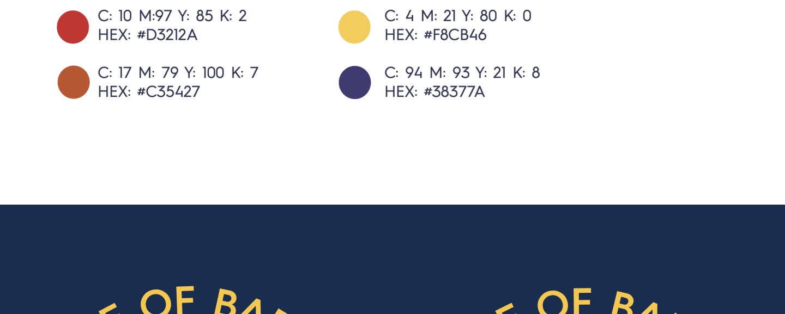

Food brings us together. A brand becomes a community.
Project
Home of Barilla
Market
Australia
Focus
Community · Brand identity Visual communication

Beyond the product.
The brief was to create experiences around pasta that offer real value in people’s lives, building engagement and loyalty to Barilla.
Home of Barilla is a community of food enthusiasts, connected by shared experiences around Italian food culture and a simpler, more joyful way of living.
01 / COMMUNITY FRAMEWORK
Values before visuals.
The strategic framework maps the community ecosystem and establishes the values behind its look and feel.
Community ecosystem and values · Original Figma artwork
02 / LOGO EXPLORATIONS
A shared table. A circular identity.
Logo suggestions explore a circular composition, flowing linework, and a palette of navy, yellow, and red.